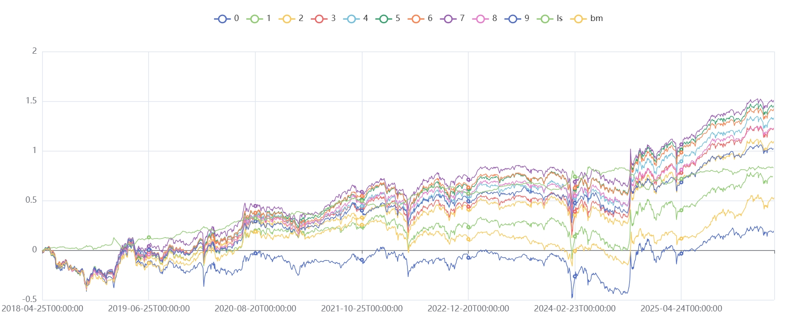
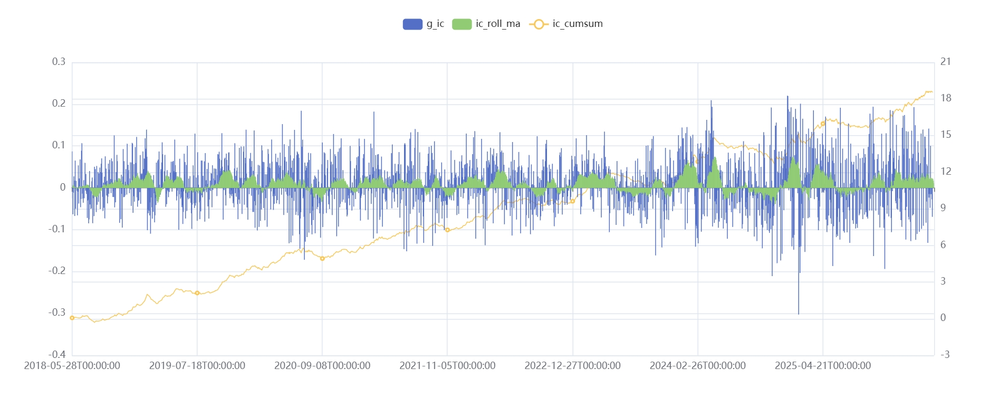

传统同比的结构性缺陷
在量化多因子模型中，衡量公司业绩变化最直接的指标是同比增长率（YoY）。但它存在一个结构性缺陷——当上期利润为负时，计算结果失去经济意义。
A 股市场中亏损公司占比不低，这意味着在相当大比例的样本上，传统同比直接失效：
- 扭亏为盈（-100 → 50）：分母为负，结果为 -150%，方向完全错误
- 亏损收窄（-100 → -50）：分母为负，结果为 -50%，看起来像"下跌"
- 由盈转亏（50 → -100）：结果为 -300%，数值失控
更深层的问题在于：量化模型（尤其是线性多因子模型）要求因子具备连续性与单调性。如果因子在盈亏转换点附近存在跳跃，回归系数将受到干扰，选股结果也会随之失真。
TSC-Quant 因子的设计
TSC-Quant（Transformed Signed Change）的核心思路是：用对数函数将变动幅度映射到连续数值空间，用符号函数保留方向，用市值作为规模标准化分母。
C：平滑常数，建议取全市场净利润绝对值的 5% 分位数
sign：符号函数，业绩改善为正，恶化为负
Scale：规模标准化分母
不能直接用 |上期利润| 作分母，因为不同市值的公司利润量级差异悬殊。建议使用市值或净资产作为 Scale。
这样计算出来的本质是业绩弹性——利润变动对每单位市值的贡献。它过滤掉了小基数公司的虚假高增长，使不同体量的公司具有横向可比性。
C：平滑常数
建议设为全市场过去一年净利润绝对值的 5% 分位数，而非固定值。其作用不仅是防止分母趋近于零：利润量级极小的公司，即便名义增幅很大，其 TSC 值也会接近 0，自动过滤小基数噪音。
三个核心性质
单调性：无论是亏损收窄、扭亏为盈还是盈利增长，只要业绩改善，因子值严格递增。这是线性因子模型的基本要求。
异常值压缩：对数变换天然将极端值压缩到合理区间。利润翻 10 倍对应 TSC ≈ 2.4，翻 100 倍对应 ≈ 4.6，无需额外的缩尾处理（Winsorization）。
横向可比：通过市值标准化，解决了"大公司增长 10% 与小公司增长 100% 谁更值得关注"的问题。模型倾向于寻找对市值有实质性贡献的利润波动。
回测结果
以下是 TSC 因子在 A 股全市场的实证结果。

图 1：TSC 因子分层净值曲线——按因子值从高到低分为五组，观察各层累计收益的单调分离程度

图 2：TSC 因子累计 IC 曲线——反映因子对未来收益预测能力的方向性与稳定性
Python 实现
import numpy as np
def tsc_quant(current_profit, previous_profit, market_cap, C):
"""
TSC-Quant 因子
C: 建议取全市场净利润绝对值的 5% 分位数
"""
delta = current_profit - previous_profit
scale = market_cap # 或使用净资产
return np.sign(delta) * np.log1p(np.abs(delta) / (scale + C))
# 计算 C：全市场净利润绝对值的 5% 分位数
C = all_market_profit.abs().quantile(0.05)
# 计算因子
tsc = tsc_quant(current_profit, previous_profit, market_cap, C)
# 截面 Z-Score 标准化，用于多因子合成
tsc_standardized = (tsc - tsc.mean()) / tsc.std()延伸思考：还有哪些方案可以替代传统同比？
TSC 并非唯一的解法。这里提供一个思路供参考。
将 Scale 从市值替换为两期利润绝对值的均值 \(\frac{|P_t|+|P_{t-1}|}{2}\)，使分母完全由利润自身决定，不依赖外部数据，即可得到另一种构造——全场景统一增长因子（UGF）：
不同的 Scale 选择背后是不同的投资逻辑。TSC 更适合关注"单位市值的业绩贡献"，UGF 则更纯粹地度量业绩变动的相对强度。两者都值得根据具体策略场景进行实证验证。